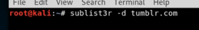

if there's a wild card character like *.tumbler.com,
use sublist3r to get as more sub domain names that are within the scop

(should probably pipe into a file)
another thing to do:

crt.sh : %.tumblr.com to see if there are good results. if there are, curl them into a file and change it to txt (might have to install html2text)


use a script to check all the site's status codes

eyewitness to get screenshots of the sites that are up


crawl the site